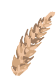
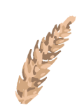
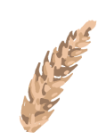

Куриные яйца


.png)


 

Куриные яйца

Главная польза куриных яиц состоит в наличии легкоусвояемого белка, который при регулярном употреблении способствует:
- увеличению мышечной массы
- укреплению костей
- поддержанию функции мозга
- сохранению целостности тканей
- снижению кровяного давления
- борьбе с лишним весом
Это полноценный набор альфа-аминокислот, которые являются сильнейшими антиоксидантами и предупреждают развитие онкологических заболеваний. Наибольшую ценность в них представляет аминокислота «лецитин». Она эффективно поддерживает здоровье печени и препятствует откладыванию холестерина на сосудистых стенках.
Желток относится к той составляющей, которая определяет двоякое отношение к пользе и вреду яйца для организма. Именно в нем содержится холестерин, который при накоплении в высокой концентрации приводит к развитию сердечно-сосудистых патологий. Однако наряду с этим органическим соединением, в желтке есть множество полезных веществ, которые становятся бесспорными аргументами за его употребление:
- Омега-3
- фолиевая кислота
- витамины А, К, Е, В12
- селен
- кальций
- фосфор
- биотин
И белок, и желток считаются идеальными продуктами при похудении. Они избавляют от ощущения голода, нормализуют обмен веществ и улучшают общее состояние кожи. Считается, что нахождение на яичной диете помогает сбросить до 5 кг веса в неделю, причем он не возвращается обратно после перехода на традиционное питание.


Если говорить о способах употребления продукта, то польза сырых куриных яиц намного выше жаренных или вареных. На усвоение сырой пищи затрачивается меньше энергии, к тому же «живые» жиры и углеводы имеют более высокую пищевую ценность в отличие от денатурированных.
Описание:
Яйца Цесарки
Цесариные яйца имеют грушевидную форму, они короче и шире куриных. Их вес достигает 40–43 г. Скорлупа очень прочная, ее окраска может варьироваться от бледно-желтого до густого коричневого оттенка. Часто яйцо цесарки может быть двуцветным: окраска градируется от светлого до темного. На ощупь скорлупа яйца цесарки шершавая; совершенно гладкие яйца цесарок встречаются довольно редко. Сырое яйцо цесарок, по сравнению с куриным, менее водянистое. За сезон (6 месяцев) от каждой цесарки можно получить всего 80–120 яиц. Этим обусловлена редкость и дороговизна цесариных яиц в магазинах и ресторанах.
За сезон (6 месяцев) от каждой цесарки можно получить всего 80–120 яиц. Этим обусловлена редкость и дороговизна цесариных яиц в магазинах и ресторанах.
Главной особенностью и гордостью яиц цесарки является уникальная скорлупа, позволяющая хранить их при температуре до +10 ºС в течение полугода. В сыром виде и приготовленными всмятку употреблять эти яйца абсолютно безопасно, опять же, благодаря толстой скорлупе.
Цесариные яйца отличаются высоким содержанием витаминов группы А и каротиноидов. Они не содержат аллергенов и поэтому рекомендованы не только всем взрослым, но и детям. В яйцах цесарок содержится безобидно маленькая доля холестерина. Более того, яйца цесарок способны излечивать от малокровия, авитаминоза и других болезней.
Яйца Бентамки
В среднем представительницы породы несут от 90 до 130 яиц в год. Вес яичка небольшой, всего 40-45 граммов. По вкусу они превосходят обычное куриное яйцо.
При содержании на улице особенно хорош желток яиц этой породы.
Яйца бентамок самые вкусные среди всех представителей куриных пород.
Яйца бентамок отличаются следующими качествами:
• Плотный белок.
• Не перемещающийся внутри яйца желток.
• Сниженное содержание холестерина.
Блюда и Рецепты: